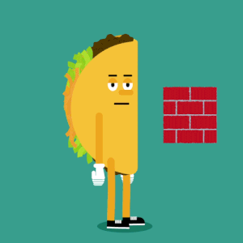
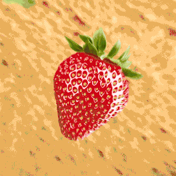

Всего  минут
минут
и вы узнаете как появился Бурито,
лучший рецепт и какой самый
дорогой в мире!
По утрам Хуан загружал своего ослика и выходил на работу, а чтобы еда не остывала, он решил заворачивать ее в пшеничные лепешки. Помимо сохранности тепла, это также принесло удобство в употребление, что сделало Хуана Мендеза знаменитым.

Для приготовления сначала необходимо прожарить масло с овощами и затем добавить яйца и «саго де Парма». (Заправкой может быть фасоль, твердые сыры, колбаса, овощи и другие типы приправ). Далее добавляют ароматные специи и смешивают все до образования однородной массы.
Наконец, все это заворачивают в тортилью(лаваш) и помещают на гриль.

Он состоял из курицы, приправленной разнообразными ингредиентами, такими как помидоры, острые перцы и исключительно редкая французская горчица.
Оно стало быстро настоящим роскошным лакомством, и многие знаменитые рестораны предлагали его в своих меню.